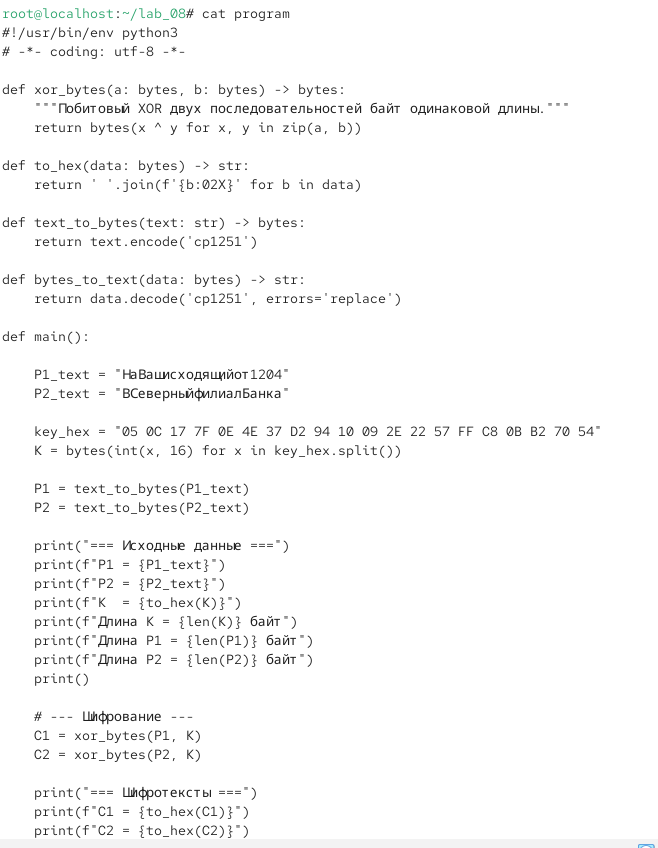
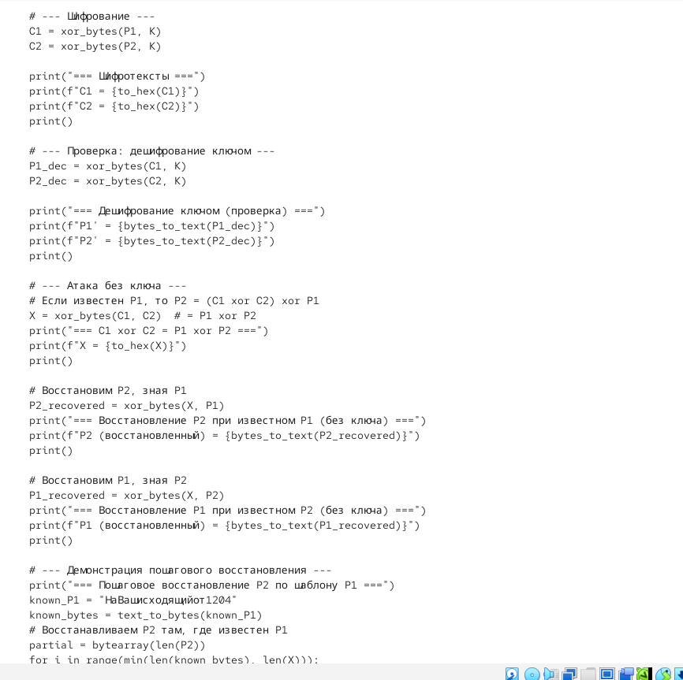
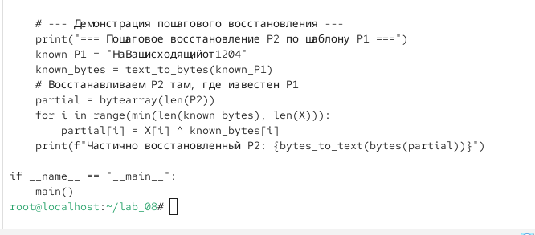
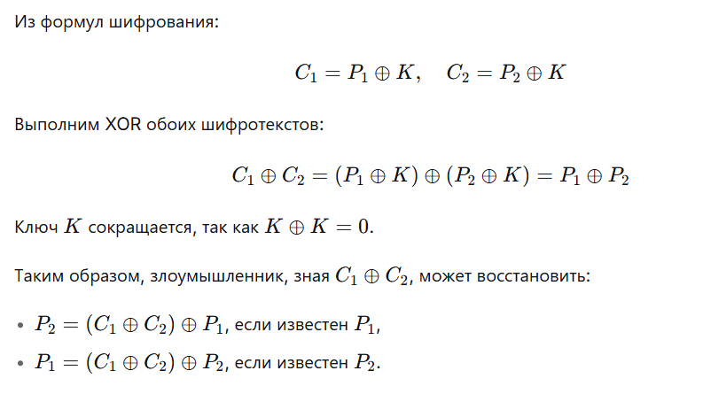
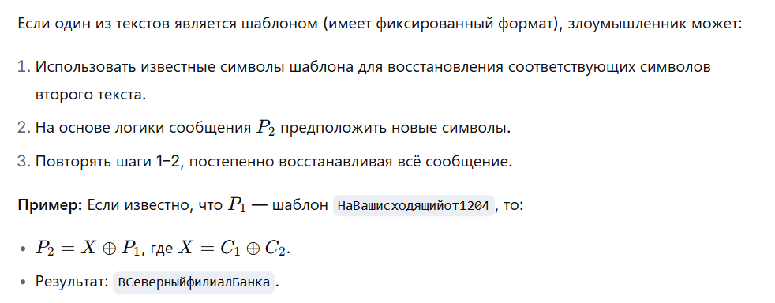
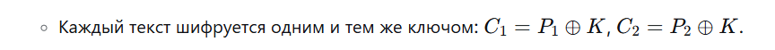
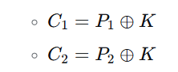
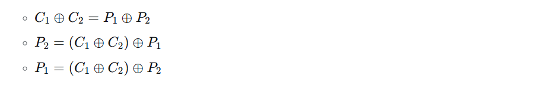
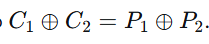

7.октябрь.2026
Элементы криптографии. Шифрование различных исходных текстов одним ключом
Освоить на практике применение режима однократного гаммирования на примере кодирования различных исходных текстов одним ключом.
Исходные данные: P1 = НаВашисходящийот1204 P2 = ВСеверныйфилиалБанка Ключ K (20 байт): 05 0C 17 7F 0E 4E 37 D2 94 10 09 2E 22 57 FF C8 0B B2 70 54
Действие: В директории /lab_08 создать файл main.py с реализацией шифрования двух текстов одним ключом.
cd ~/lab_08 nano main.py
Листинг программы main.py:



Рис. 3,4,5 — python
Сделать файл исполняемым и запустить.

Рис. 7
Действие: Показать, что злоумышленник может прочитать оба текста, не зная ключа. Аналитический вывод:

Пошаговое восстановление:

4. Ответы на контрольные вопросы
1. Как, зная один из текстов (P1 или P2), определить другой, не зная при этом ключа?
2. Что будет при повторном использовании ключа для шифрования текста? Это нарушает условие однократного использования. Злоумышленник может вычислить P1 ⊕ P2 и, используя шаблоны или логику сообщений, восстановить оба текста без знания ключа.
3. Как реализуется режим шифрования однократного гаммирования одним ключом двух открытых текстов?

4. Перечислите недостатки шифрования одним ключом двух открытых текстов. Нарушение условия однократного использования ключа. Возможность восстановления обоих текстов без знания ключа. Снижение криптостойкости. Ключ становится уязвимым для атаки.
5.Перечислите преимущества шифрования одним ключом двух открытых текстов. Экономия ключевого материала. Простота реализации. Возможность использования одного ключа для нескольких сообщений (при соблюдении дополнительных мер безопасности).
□ Титульный лист
□ Цель работы
□ Описание процесса выполнения с командами и снимками экрана
□ Листинг программы main.py
□ Результаты работы программы
□ Аналитическое обоснование атаки без ключа
□ Ответы на контрольные вопросы
□ Выводы, согласованные с целью работы
В ходе лабораторной работы я:
Разработал приложение main.py на языке Python, реализующее шифрование и дешифрование двух текстов одним ключом в режиме однократного гаммирования.
Зашифровал два текста P1 и P2 одним ключом К:


Продемонстрировал пошаговое восстановление P2 по шаблону P1.
Убедился, что повторное использование ключа для шифрования разных текстов нарушает условие однократности и снижает криптостойкость.
Ключевой вывод: Шифрование двух текстов одним ключом в режиме однократного гаммирования позволяет злоумышленнику восстановить оба текста без знания ключа, используя свойство

освоено практическое применение режима однократного гаммирования для кодирования различных исходных текстов одним ключом.
7. Краткая сводка команд
bash
# Переход в рабочую директорию
cd ~/lab_08
# Создание программы
nano main.py
# (вставить листинг программы)
# Сделать исполняемым и запустить
chmod +x main.py
./main.py
# Просмотр файла cipher
cat cipher